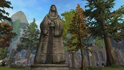
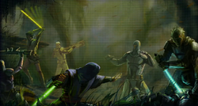

Джедаи
Джедай (англ. Jedi) — адепт светлой стороны Силы, служащий Ордену джедаев и использующий энергию Силы. Главным оружием джедаев был световой меч с лезвием из чистой энергии. Джедаи боролись за мир и справедливость в Галактической Республике, как правило, против своих заклятых врагов, Ситхов и тёмных джедаев, являвшихся сторонниками тёмной стороны Силы. На протяжении всей своей истории Орден подвергался почти полному уничтожению пять раз: во времена Империи ситхов Дарта Ревана и вскоре после этого, Триумвиратом ситхов под предводительством Дарта Нихилуса, во время Первой чистки джедаев, спустя почти 4000 лет после нее во время Великого истребления джедаев, начатого Дартом Сидиусом и затем, спустя столетие, во время Третьей чистки джедаев, произошедшей в Галактической Империи Дарта Крайта. Однако каждый раз Орден возрождался, и в том была немалая заслуга семьи Скайуокер, сыгравшую важную роль в истории джедаев.
История джедаев
Общество джедаев сформировалось на Тайтоне и изначально представляло собой группу исследователей-философов, однако со временем их стали почитать как хранителей мира и спокойствия в Галактике. Мощь, которую им давало владение таинственной Силой и световым мечом, ставшим их отличительным признаком, воодушевила многих жителей Галактики. Спокойное и осмотрительное поведение сделало джедаев превосходными посланниками мира во времена конфликтов или споров. Однако при всей их могущественности, джедаев было крайне мало. В периоды напряжённости и смуты им зачастую приходилось вступать в столкновения с силами зла, бросавшими вызов порядкам и устоям, которым служили джедаи. Самыми известными противниками джедаев были ситхи. Эти тёмные воины были полной противоположностью джедаев и их заклятыми врагами, противостояние которым не раз погружало Галактику в пучину войн. Во времена кризиса ситхи могли использовать Тёмную сторону Силы, чтобы ослабить джедаев и заглушить их способность предвидения.
Основой жизненного пути джедая стали мудрость и терпение, опиравшиеся на быстрые и решительные действия, когда это было необходимо. Однако иногда Совет джедаев действовал нерешительно, как в случае Мандалорских войн, когда Совет предпочёл промедлить и дождаться естественного урегулирования конфликта без вмешательства со стороны джедаев. Бездействие Ордена подстрекало Ревана к восстанию против него, что в конечном итоге привело к Галактической войне джедаев. Этот конфликт стёр грань между джедаями и ситхами в глазах обычных жителей Галактики, для которых обе стороны несли вину за разрушение таких планет, как Катарр, Телос IV и Тарис.
Спустя тысячелетия мастер-ситх Дарт Сидиус воплотил свой хитроумный план. Под видом своего альтер эго он занял пост Верховного канцлера Республики, развязал Войны клонов, подорвал авторитет джедаев в Галактике, а затем одним мастерским ударом уничтожил Орден джедаев и убил большинство его членов, в конечном итоге обретя полную власть над Галактикой и провозгласив себя Императором, преобразовал Республику в Галактическую Империю. Однако даже такая катастрофа не смогла полностью истребить джедаев, и в течение одного поколения они вернулись, основав Новый орден джедаев. Позднее они вновь встали на защиту Галактики во время войны с юужань-вонгами.
Путь джедая
Чтобы стать джедаем, было необходимо обладать проницательным умом и быть глубоко преданным делу Ордена. Вступление на этот путь означало посвящение своей жизни служению идеалам, которые свято чтились джедаями. Процесс отбора новых последователей начинался с выявления тех, кто проявлял способности владения Силой, после чего их сразу после рождения либо спустя некоторое время после оного отправляли в Храм джедав на Корусанте либо в меньшие анклавы джедаев, где они становились юнлингами.
Обучение джедая начиналось с изучения Кодекса, которого он обязан был строго придерживаться в течении всей жизни. Во время этого периода учеников обучали рациональному мышлению, терпению и доброжелательности. Кодекс джедаев учил, что такие эмоции как ненависть, гнев и страх ведут к Тёмной стороне Силы и по этой причине они недопустимы для джедая.
Обучение
Детей, проходивших начальную стадию обучения, называли юнлингами. Их подготовка проходила под руководством опытных мастеров-джедаев, в ходе которой им объяснялись основы пути джедая и могущества Силы. После Руусанской реформы окончательно сложилась практика принимать на обучение исключительно детей, однако много позже, во времена становления Нового Ордена джедаев, от нее пришлось отказаться и перейти к набору взрослых студентов. Впоследствии это нововведение было отменено, так как необходимость в нем отпала.
Когда кто-то из юнлингов достигал удовлетворительного понимания пути джедая, его, как правило, брал под свою опеку один из членов Ордена джедаев в ранге рыцаря либо мастера, становившийся его куратором до полного завершения обучения. С момента начала взятия его в ученики мастером уже бывший юнлинг приобретал ранг падавана, в коем оставался вплоть до прохождения испытаний джедаев. На начальных этапах этого периода обучения учитель вместе со своим подопечным отправлялись на задания вместе, но спустя некоторое время он начинал выполнять некоторые из них самостоятельно, получая таким образом опыт действий без непосредственного контроля с чье-либо стороны.
Однако не все юнлинги переходили на эту ступень: во времена Старой Республики те из них, кто не был выбран для продолжения обучения в качестве падавана до достижения тринадцатилетия, переводились в одно из подразделений Корпуса обслуживания джедаев. Такая судьба постигла бы и юного Оби-Вана Кеноби, если бы не события на Бендомире, после которых Квай-Гон Джинн взял его на обучение.